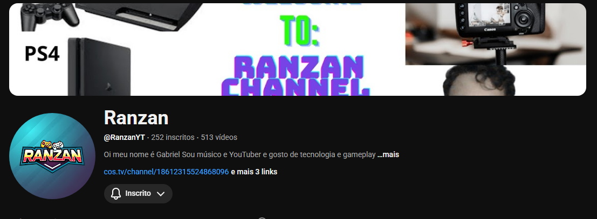

Um pouco sobre mim e minhas paixões
Sou apaixonado por tecnologia! Gosto de explorar novidades, aprender sobre programação e descobrir como as coisas funcionam por trás das telas.
Curto músicas do universo geek, como trilhas sonoras de jogos, filmes e animes. Nada melhor do que programar ou jogar ouvindo uma boa soundtrack!
Gosto de videogames em geral! Desde jogos competitivos até aventuras épicas. Sempre pronto para explorar novos mundos e desafios.
Também pratico Muay Thai, um esporte que exige disciplina, foco e resistência. É uma forma incrível de manter o corpo ativo e a mente forte.
Gosto de criar concepts e ideias criativas, seja para personagens, mundos ou projetos. Explorar a imaginação é uma das coisas que mais me motiva.
Atualmente estou cursando Ciências da Computação na UPF (Universidade de Passo Fundo - RS). Durante minha jornada acadêmica, venho desenvolvendo conhecimentos em programação, lógica e tecnologia, sempre buscando evoluir e me tornar um profissional cada vez mais preparado para os desafios do futuro.
Acredito que o conhecimento pode transformar vidas. Meu objetivo é crescer na área da tecnologia e, com isso, ajudar outras pessoas a conquistarem suas oportunidades, assim como eu estou conquistando as minhas.
Quero usar tudo o que aprendo para impactar positivamente o mundo, compartilhando conhecimento, criando soluções e mostrando que qualquer pessoa pode evoluir com dedicação e esforço.
Sou uma pessoa curiosa, criativa e determinada, apaixonada pelo universo digital e sempre em busca de novos desafios e aprendizados.
Sou um Youtuber(Criador De Conteudo) e gravo gameplays, musicas e conteudos "diferenciados".